# Import packages
library(tidyverse)
library(janitor)
library(labelled)
library(broom)
library(haven)
library(stargazer)
library(ggeffects)
# Import ess data
ess <- read_dta("data/ess8.dta")
n_distinct(ess$cntry) # 23 different countries[1] 23In practice, linear regression is seldom executed with only one variable; rather, it involves multiple variables. The purpose of incorporating multiple variables is not solely to comprehend the impact of one variable on another, but rather to “isolate” this effect by controlling for other independent variables that may also contribute to explaining the variance of the dependent variable. This concept is commonly known as ceteris paribus, signifying we keep all other factors at a constant level.
In R, to perform linear regression while controlling for multiple independent variables, you can use the lm() function and specify the formula as follows: lm(y ~ x + z + w, data). In this formula, y represents the dependent variable, while x, z, and w represent the independent variables you want to include in the model. The data argument is used to specify the dataset from which the variables are derived.
To understand how to conduct multiple regression in R, we will analyze the European Social Survey. Our focus will be on exploring the gender gap in climate policy attitudes. Is there a gender difference in the way people support climate policies? Some literature (Bush and Clayton 2023) suggests this possibility, and we aim to verify it using European Social Survey data. Additionally, we will examine how this gender difference varies across the 23 countries in our dataset. Here, I use the 8th wave of the ESS, which contains variables related to climate policy support.
# Import packages
library(tidyverse)
library(janitor)
library(labelled)
library(broom)
library(haven)
library(stargazer)
library(ggeffects)
# Import ess data
ess <- read_dta("data/ess8.dta")
n_distinct(ess$cntry) # 23 different countries[1] 23To evaluate the impact of gender on climate policy support, I utilize three variables from the dataset:
banhhap: “Favor banning the sale of the least energy-efficient household appliances to mitigate climate change.”inctxff: “Favor increasing taxes on fossil fuels to mitigate climate change.”sbsrnen: “Favor subsidies for renewable energy to mitigate climate change.”The variables are coded on a scale of 1 to 5, where 1 signifies “Strongly in favor” and 5 denotes “Strongly against.” Consequently, a higher value indicates stronger opposition to climate policies.
Before starting, it’s beneficial to examine the distribution of the variables. From the distribution, we observe distinct patterns of opposition to climate policies across the three variables. People tend to show more support for subsidies for renewable energy and the ban of the least energy-efficient household appliances. Support for increasing taxes on fossil fuels is the lowest and is more dispersed.
Warning: Removed 1688 rows containing non-finite outside the scale range
(`stat_count()`).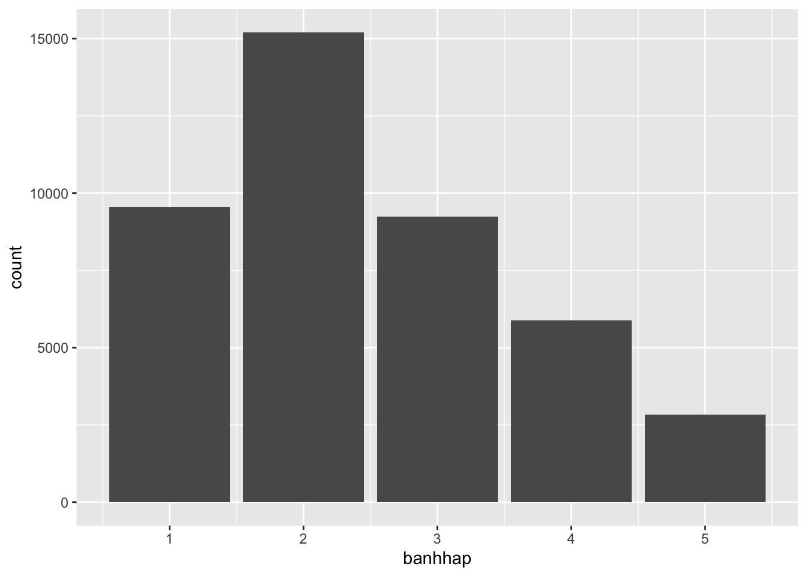
Warning: Removed 1986 rows containing non-finite outside the scale range
(`stat_count()`).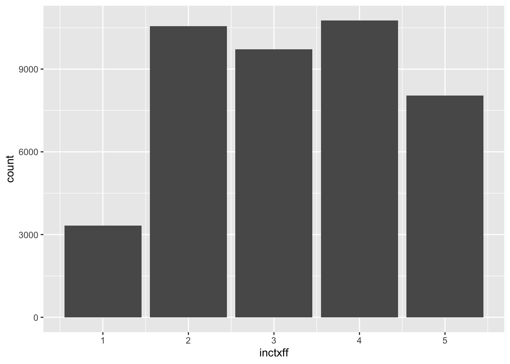
Warning: Removed 1404 rows containing non-finite outside the scale range
(`stat_count()`).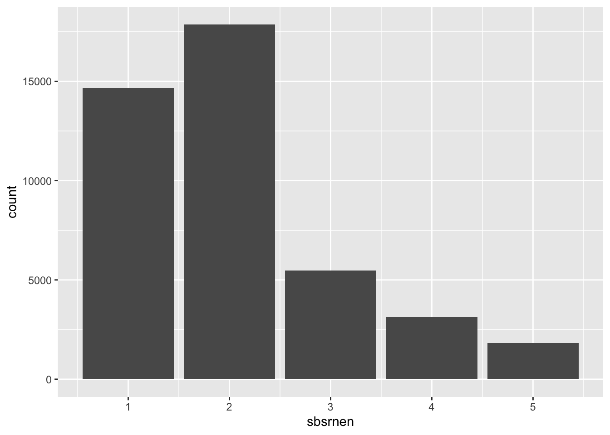
Before conducting a regression analysis, it is necessary to recode the variables of interest. The primary independent variable is gender, and additional control variables that might influence climate policy support include left-right self-placement (lrscale), education in years (eduyrs), feeling about household income (hincfel, from 1 = living comfortably to 4 = very difficult), age (yrbrn), and satisfaction with the economic situation (stfeco).
ess |>
count(gndr)# A tibble: 3 × 2
gndr n
<dbl+lbl> <int>
1 1 [Male] 21027
2 2 [Female] 23351
3 NA(a) [No answer] 9ess <- ess |>
mutate(gender = unlabelled(gndr))
ess |>
count(gender)# A tibble: 3 × 2
gender n
<fct> <int>
1 Male 21027
2 Female 23351
3 <NA> 9ess |>
count(lrscale)# A tibble: 12 × 2
lrscale n
<dbl+lbl> <int>
1 0 [Left] 1463
2 1 [1] 846
3 2 [2] 2121
4 3 [3] 3754
5 4 [4] 3780
6 5 [5] 12389
7 6 [6] 4105
8 7 [7] 4269
9 8 [8] 3265
10 9 [9] 999
11 10 [Right] 1592
12 NA(b) [Don't know] 5804ess |>
count(stfeco)# A tibble: 12 × 2
stfeco n
<dbl+lbl> <int>
1 0 [Extremely dissatisfied] 2061
2 1 [1] 1334
3 2 [2] 3048
4 3 [3] 4650
5 4 [4] 5247
6 5 [5] 7716
7 6 [6] 6598
8 7 [7] 6765
9 8 [8] 4219
10 9 [9] 1171
11 10 [Extremely satisfied] 692
12 NA(b) [Don't know] 886ess <- ess |>
mutate(
left_right = case_when(
# when lrscale is NA, replace with the mean of the variable
is.na(lrscale) ~ mean(lrscale, na.rm = TRUE),
# otherwise, keep the value of the variable
.default = lrscale
),
stfeco = case_when(
# when stfeco is NA, replace with the mean of the variable
is.na(stfeco) ~ mean(stfeco, na.rm = TRUE),
# otherwise, keep the value of the variable
.default = stfeco
)
)
ess |>
count(left_right)# A tibble: 12 × 2
left_right n
<dbl+lbl> <int>
1 0 [Left] 1463
2 1 [1] 846
3 2 [2] 2121
4 3 [3] 3754
5 4 [4] 3780
6 5 [5] 12389
7 5.16 5804
8 6 [6] 4105
9 7 [7] 4269
10 8 [8] 3265
11 9 [9] 999
12 10 [Right] 1592ess |>
count(stfeco)# A tibble: 12 × 2
stfeco n
<dbl+lbl> <int>
1 0 [Extremely dissatisfied] 2061
2 1 [1] 1334
3 2 [2] 3048
4 3 [3] 4650
5 4 [4] 5247
6 5 [5] 7716
7 5.04 886
8 6 [6] 6598
9 7 [7] 6765
10 8 [8] 4219
11 9 [9] 1171
12 10 [Extremely satisfied] 692Replacing missing values with the mean is a simple way to keep these respondents in the analysis (13% of respondents did not place themselves on the left-right scale), but it is a crude solution: it treats them all as average respondents, which reduces the variance of the variable and makes our results look more certain than they are. Alternatives include dropping these observations or using multiple imputation.
# A tibble: 5 × 2
hincfel n
<dbl+lbl> <int>
1 1 [Living comfortably on present income] 14026
2 2 [Coping on present income] 20492
3 3 [Difficult on present income] 6945
4 4 [Very difficult on present income] 2400
5 NA(b) [Don't know] 524ess |>
count(yrbrn)# A tibble: 87 × 2
yrbrn n
<dbl+lbl> <int>
1 1916 1
2 1918 5
3 1919 3
4 1920 2
5 1921 9
6 1922 16
7 1923 20
8 1924 30
9 1925 43
10 1926 81
# ℹ 77 more rows# A tibble: 87 × 2
age n
<dbl> <int>
1 14 63
2 15 356
3 16 489
4 17 521
5 18 574
6 19 521
7 20 523
8 21 533
9 22 549
10 23 566
# ℹ 77 more rowsSince there are three dependent variables, a separate model is created for each using the lm() function to run a linear regression. The formula comprises the dependent variable followed by the independent variables. The dataset is specified as the second argument, and the results of each model are saved in separate objects.
One way to interpret and communicate regression results is through regression tables. In this case, the stargazer package is utilized to display the results of the three models. To explore all available options for customizing the regression table, refer to ?stargazer. For printing in Quarto, include #| output: asis and type = "html". To print in the console, change type = "text".
Dependent variable:
---------------------------------------------------------------------------------------------------------
sbsrnen inctxff banhhap
(1) (2) (3) (4) | Gender - Female -0.039*** -0.045*** -0.066*** -0.098*** (0.010) (0.010) (0.012) (0.011) |
|---|
| Observations 42,977 42,130 41,588 41,861 R2 0.0003 0.020 0.061 0.012 Adjusted R2 0.0003 0.020 0.061 0.012 Residual Std. Error 1.067 (df = 42975) 1.054 (df = 42123) 1.196 (df = 41581) 1.162 (df = 41854) F Statistic 14.076*** (df = 1; 42975) 141.619*** (df = 6; 42123) 453.405*** (df = 6; 41581) 85.649*** (df = 6; 41854) ======================================================================================================================================= Note: p<0.1; p<0.05; p<0.01 |
| ### Coefficient plots |
Whean dealing with multiples variables and models, it is useful to plot the coefficients to compare them. Here, we will use the broom package to extract the coefficients of the models and plot them with ggplot2. To combine the outputs of the three models, the map_df() function is used to iterate over the list of models and bind the results into a single tibble. |
| ::: {.cell} |
| ```{.r .cell-code} coeff1 <- tidy(model1, conf.int = TRUE) coeff2 <- tidy(model2, conf.int = TRUE) coeff3 <- tidy(model3, conf.int = TRUE) |
| coeffiecients <- bind_rows(coeff1, coeff2, coeff3) coeffiecients ``` |
| ::: {.cell-output .cell-output-stdout} |
# A tibble: 21 × 7 term estimate std.error statistic p.value conf.low conf.high <chr> <dbl> <dbl> <dbl> <dbl> <dbl> <dbl> 1 (Intercept) 1.94 0.0367 52.8 0 1.86 2.01 2 genderFemale -0.0450 0.0103 -4.36 1.30e- 5 -0.0652 -0.0248 3 eduyrs -0.0183 0.00142 -12.8 1.35e-37 -0.0211 -0.0155 4 hincfel 0.0768 0.00673 11.4 4.04e-30 0.0636 0.0900 5 left_right 0.0355 0.00247 14.4 5.77e-47 0.0307 0.0404 6 age 0.00225 0.000286 7.89 3.05e-15 0.00169 0.00281 7 stfeco -0.0117 0.00238 -4.91 9.24e- 7 -0.0164 -0.00703 8 (Intercept) 3.31 0.0420 78.9 0 3.23 3.39 9 genderFemale -0.0662 0.0118 -5.62 1.95e- 8 -0.0893 -0.0431 10 eduyrs -0.0307 0.00163 -18.9 4.98e-79 -0.0338 -0.0275 # ℹ 11 more rows |
| ::: |
| ```{.r .cell-code} models_coefficients <- map_df(list(model1, model2, model3), ~ tidy(.x, conf.int = T), .id = “model”) |
| models_coefficients |> view() |
| models_coefficients |> # Remove the intercept filter(term != “(Intercept)”) |> ggplot(aes(term, estimate, color = model)) + # Add confidence intervals geom_pointrange(aes(ymin = conf.low, ymax = conf.high), position = position_dodge(width = 0.5)) + # Add a dashed line at 0 (0 means no effect) geom_hline(yintercept = 0, linetype = “dashed”) + # Rotate the labels on the x axis coord_flip() + # Add a title and change the labels labs(x = “Coefficient”, y = NULL, title = “Coefficients of the different models”) + theme_minimal() + scale_color_manual(labels = c(“Subsidies”, “Tax”, “Ban”), values = c(“#00AFBB”, “#E7B800”, “#FC4E07”)) ``` |
| ::: {.cell-output-display} 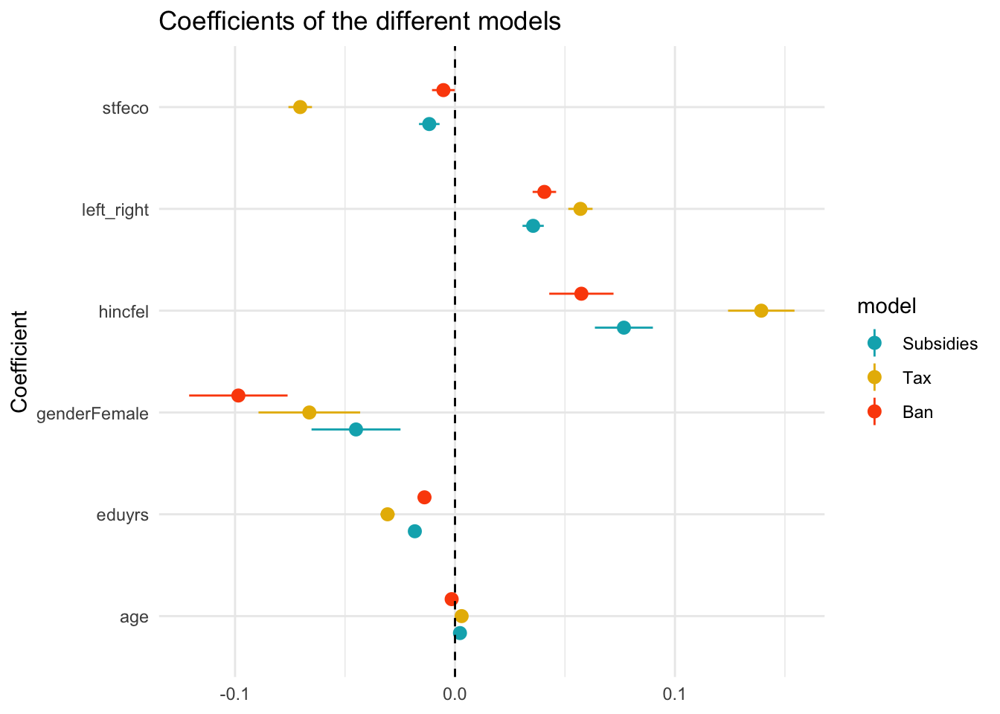 ::: ::: |
| ### Predicted values of the model |
An alternative way to interpret the results of a regression model is to plot the predicted values of the model. The predicted values are the values of the dependent variable that the model predicts for each value of the independent variable. while holding the other variables constant. This is done with the ggeffects package. The ggpredict() function is used to extract the predicted values of the model for each variable. The plot() function is then used to plot the results. |
| ::: {.cell} |
{.r .cell-code} ggpredict(model1, terms = "gender") |> plot() |
| ::: {.cell-output-display} 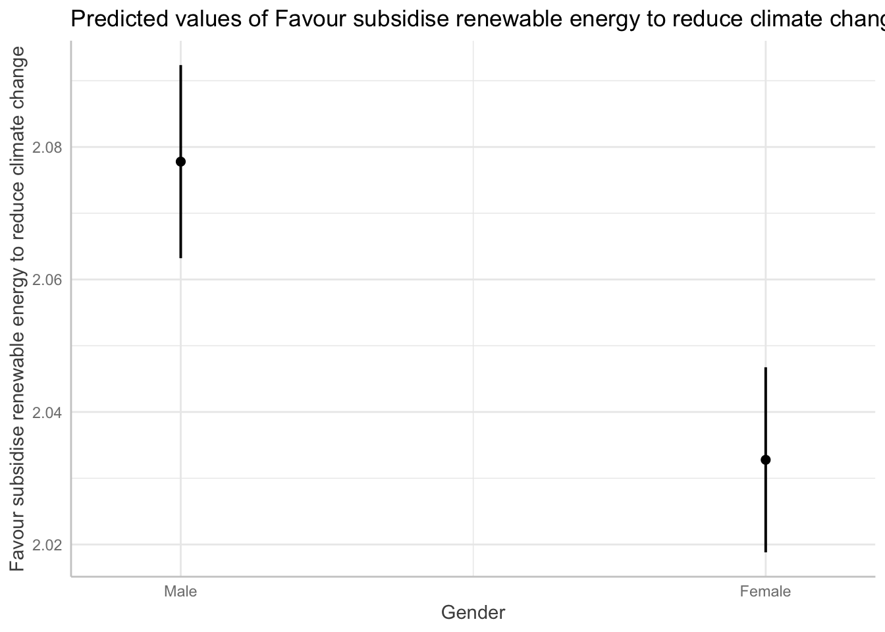 ::: ::: |
| ### Interaction effects : ideology and gender |
Our initial models assess the effect of each variable while holding all other variables constant. However, it is conceivable that the effect of one variable depends on the values of others. This phenomenon is referred to as interaction effects, and it is necessary to explicitly specify these interactions in our regression models to evaluate their effects. Here, I am interested in the interaction between gender and left-right self-placement. To do so, I add the interaction term to the model with the * operator. |
| ::: {.cell} |
{.r .cell-code} ess |> group_by(gender) |> summarise(lrscale = mean(left_right, na.rm = T)) |
| ::: {.cell-output .cell-output-stdout} |
# A tibble: 3 × 2 gender lrscale <fct> <dbl> 1 Male 5.25 2 Female 5.08 3 <NA> 4.57 |
| ::: ::: |
| ::: {.cell} |
{.r .cell-code} model4 <- lm(inctxff ~ gender*left_right + eduyrs + hincfel + age + stfeco, ess) ::: |
| The results of the model displayed in the regression table show that our interaction effect is statistically significant and negative and that our gender coefficient is no longer significant on its own. Note that, with an interaction, the gender coefficient no longer measures an average gender gap: it measures the gender gap for respondents at 0 on the left-right scale (the far left). The interaction tells us that the relationship between gender and the dependent variable is different depending on the value of the left-right self-placement variable. |
| ::: {.cell} |
{.r .cell-code} stargazer(model4, type = "text") # Regression table |
| ::: {.cell-output .cell-output-stdout} |
| ``` |
| =================================================== Dependent variable: ————————— inctxff |
genderFemale -0.006
(0.031)
left_right 0.063***
(0.004)
eduyrs -0.031***
(0.002)
hincfel 0.140***
(0.008)
age 0.003***
(0.0003)
stfeco -0.070***
(0.003)
genderFemale:left_right -0.012**
(0.006)
Constant 3.279***
(0.045)
Observations 41,588
R2 0.062
Adjusted R2 0.061
Residual Std. Error 1.196 (df = 41580)
F Statistic 389.285*** (df = 7; 41580) =================================================== Note: p<0.1; p<0.05; p<0.01
:::
:::
The interaction coefficient is negative, which means that the slope of the relationship is less steep for women than for men, suggesting that women have a less pronounced increase in climate opposition as they move to the right on the ideological scale compared to males.
We can plot the predicted values of the dependent variables for each value of the independent variables. From this, we can interpret that men tend to oppose more climate policies than women but that this effect is not significant for people who place themselves on the left of the political spectrum. The gender gap starts to appear for people who place themselves in the center and is the most important for people who place themselves on the right of the political spectrum. If there was no interaction effect, the lines would be parallel with similar slopes.
::: {.cell}
```{.r .cell-code}
# Predicted values
ggpredict(model4, terms = c("left_right", "gender")) |>
as_tibble() |>
ggplot(aes(x, predicted, color = group, fill = group)) +
geom_line() +
geom_ribbon(aes(ymin = conf.low, ymax = conf.high), alpha = 0.2, colour = NA)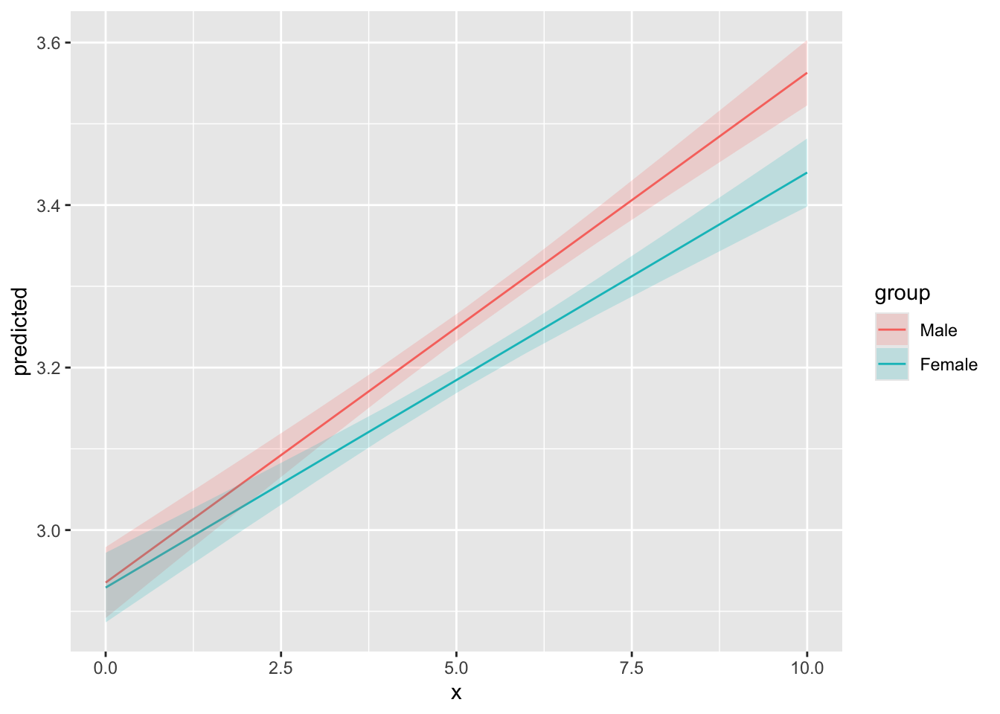
:::
purrr
Running a multiple linear regression model is great, but what about running dozens of regression models at the same time and comparing their results ? This is especially important when you want to run regression models across different subgroups or the same model on different dependent variables. In this section, I will show you how to use the purrr package to run multiple models at the same time and how to extract the results in a nice format. So far, I fitted my models on the whole dataset. However, it is possible that the effect of the independent variables on the dependent variable varies across countries. To check this, I will run a model for each country and see if the coefficients vary across countries.
n_distinct(ess$cntry) # 23 different countries[1] 23ess |> count(cntry)# A tibble: 23 × 2
cntry n
<chr> <int>
1 AT 2010
2 BE 1766
3 CH 1525
4 CZ 2269
5 DE 2852
6 EE 2019
7 ES 1958
8 FI 1925
9 FR 2070
10 GB 1959
# ℹ 13 more rowsess_models <- ess |>
# Select variables of interest
select(cntry,
gender,
left_right,
hincfel,
age,
eduyrs,
inctxff,
banhhap,
sbsrnen,
stfeco) |>
# Pivot longer to have one column for the policy and one for the values for each respondent
pivot_longer(
cols = c(inctxff, banhhap, sbsrnen),
names_to = "policy",
values_to = "opposition")
ess_models# A tibble: 133,161 × 9
cntry gender left_right hincfel age eduyrs stfeco policy opposition
<chr> <fct> <dbl+lbl> <dbl+lbl> <dbl> <dbl+> <dbl+> <chr> <dbl+lbl>
1 AT Female 0 [Left] 2 [Coping on p… 34 21 4 [4] inctx… 1 [Strong…
2 AT Female 0 [Left] 2 [Coping on p… 34 21 4 [4] banhh… 2 [Somewh…
3 AT Female 0 [Left] 2 [Coping on p… 34 21 4 [4] sbsrn… 1 [Strong…
4 AT Male 1 [1] 2 [Coping on p… 52 16 1 [1] inctx… 1 [Strong…
5 AT Male 1 [1] 2 [Coping on p… 52 16 1 [1] banhh… 2 [Somewh…
6 AT Male 1 [1] 2 [Coping on p… 52 16 1 [1] sbsrn… 2 [Somewh…
7 AT Female 5 [5] 2 [Coping on p… 68 13 6 [6] inctx… 4 [Somewh…
8 AT Female 5 [5] 2 [Coping on p… 68 13 6 [6] banhh… 2 [Somewh…
9 AT Female 5 [5] 2 [Coping on p… 68 13 6 [6] sbsrn… 2 [Somewh…
10 AT Male 0 [Left] 2 [Coping on p… 54 12 5 [5] inctx… 3 [Neithe…
# ℹ 133,151 more rowsess_models <- ess_models |>
# Nest the data by country and policy
nest(data = -c(cntry, policy))
ess_models# A tibble: 69 × 3
cntry policy data
<chr> <chr> <list>
1 AT inctxff <tibble [2,010 × 7]>
2 AT banhhap <tibble [2,010 × 7]>
3 AT sbsrnen <tibble [2,010 × 7]>
4 BE inctxff <tibble [1,766 × 7]>
5 BE banhhap <tibble [1,766 × 7]>
6 BE sbsrnen <tibble [1,766 × 7]>
7 CH inctxff <tibble [1,525 × 7]>
8 CH banhhap <tibble [1,525 × 7]>
9 CH sbsrnen <tibble [1,525 × 7]>
10 CZ inctxff <tibble [2,269 × 7]>
# ℹ 59 more rowsess_models1 <- ess_models |>
mutate(
# For each country-policy pairs, fit a model
model = map(
data,
~ lm(opposition ~ gender + left_right + hincfel + age + eduyrs + stfeco, .x)),
# Extract the coefficients of each model in a tidied column
tidied = map(model, ~ tidy(.x, conf.int = T)),
# Extract the R2 of each model in a glanced column
glanced = map(model, glance),
# Extract the residuals of each model in a augmented column
augmented = map(model, augment)
)
ess_models1# A tibble: 69 × 7
cntry policy data model tidied glanced augmented
<chr> <chr> <list> <list> <list> <list> <list>
1 AT inctxff <tibble [2,010 × 7]> <lm> <tibble [7 × 7]> <tibble> <tibble>
2 AT banhhap <tibble [2,010 × 7]> <lm> <tibble [7 × 7]> <tibble> <tibble>
3 AT sbsrnen <tibble [2,010 × 7]> <lm> <tibble [7 × 7]> <tibble> <tibble>
4 BE inctxff <tibble [1,766 × 7]> <lm> <tibble [7 × 7]> <tibble> <tibble>
5 BE banhhap <tibble [1,766 × 7]> <lm> <tibble [7 × 7]> <tibble> <tibble>
6 BE sbsrnen <tibble [1,766 × 7]> <lm> <tibble [7 × 7]> <tibble> <tibble>
7 CH inctxff <tibble [1,525 × 7]> <lm> <tibble [7 × 7]> <tibble> <tibble>
8 CH banhhap <tibble [1,525 × 7]> <lm> <tibble [7 × 7]> <tibble> <tibble>
9 CH sbsrnen <tibble [1,525 × 7]> <lm> <tibble [7 × 7]> <tibble> <tibble>
10 CZ inctxff <tibble [2,269 × 7]> <lm> <tibble [7 × 7]> <tibble> <tibble>
# ℹ 59 more rowsThe coefficient plot will give us an estimate of the effect of gender of each of the three policy for each country. We can see that there is some heterogeneity and that the gender effect is not always significant.
ess_models1 |>
unnest(tidied) # A tibble: 483 × 13
cntry policy data model term estimate std.error statistic p.value
<chr> <chr> <list> <list> <chr> <dbl> <dbl> <dbl> <dbl>
1 AT inctxff <tibble> <lm> (Interce… 3.25 0.225 14.5 3.22e-45
2 AT inctxff <tibble> <lm> genderFe… -0.0159 0.0522 -0.305 7.60e- 1
3 AT inctxff <tibble> <lm> left_rig… 0.0698 0.0135 5.17 2.54e- 7
4 AT inctxff <tibble> <lm> hincfel 0.205 0.0375 5.46 5.43e- 8
5 AT inctxff <tibble> <lm> age 0.00609 0.00154 3.95 8.19e- 5
6 AT inctxff <tibble> <lm> eduyrs -0.0415 0.00917 -4.53 6.23e- 6
7 AT inctxff <tibble> <lm> stfeco -0.0921 0.0128 -7.22 7.29e-13
8 AT banhhap <tibble> <lm> (Interce… 2.40 0.217 11.1 1.39e-27
9 AT banhhap <tibble> <lm> genderFe… -0.0482 0.0506 -0.952 3.41e- 1
10 AT banhhap <tibble> <lm> left_rig… 0.0484 0.0131 3.70 2.24e- 4
# ℹ 473 more rows
# ℹ 4 more variables: conf.low <dbl>, conf.high <dbl>, glanced <list>,
# augmented <list>ess_models1 |>
# Unnest the dataset
unnest(tidied) |>
# Filter to keep only the coefficient of interest
filter(term == "genderFemale") |>
# Create a column to indicate if the coefficient is significant
mutate(significant = p.value < 0.05) |>
# Create a coefficient plot for each country and policy
ggplot(aes(fct_reorder(cntry, estimate), estimate, color = significant)) +
geom_pointrange(aes(ymin = conf.low, ymax = conf.high), position = position_dodge(width = 1)) +
coord_flip() +
geom_hline(yintercept = 0, linetype = "dashed") +
theme_light() +
labs(x = "Country") +
facet_wrap(~ policy) +
scale_colour_viridis_d()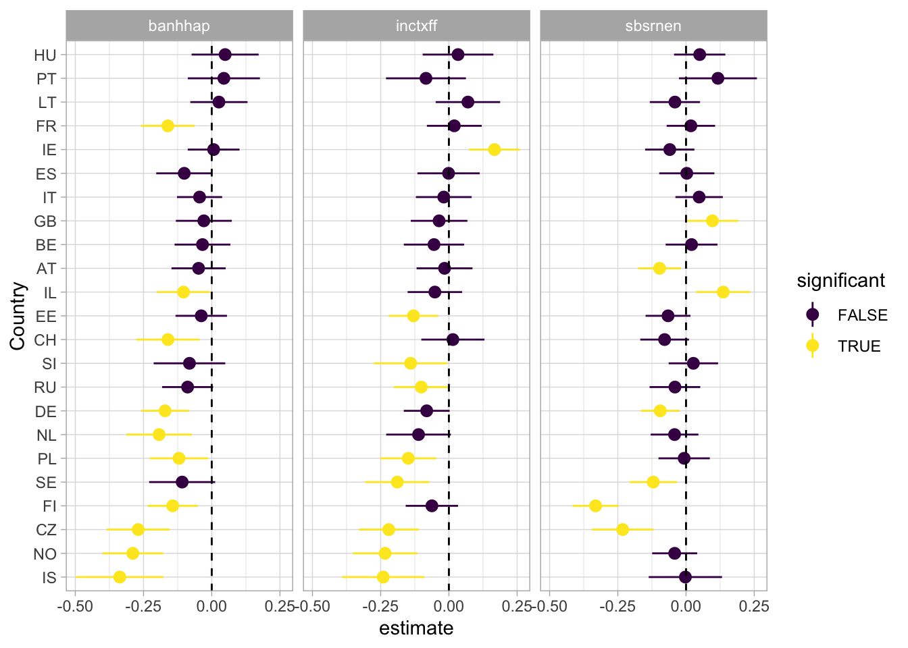
If we look at the results of our estimate for the left-right variable, the results are even more clear. We tend to see a divide between eastern and western european countries.
ess_models1 |>
unnest(tidied) |>
filter(term == "left_right") |>
mutate(
significant = p.value < 0.05,
policy = case_match(
policy,
"banhhap" ~ "Ban sale non efficient households",
"inctxff" ~ "Tax fossil fuels",
"sbsrnen" ~ "Subsidies renewable"
)
) |>
ggplot(aes(fct_reorder(cntry, estimate), estimate, color = significant)) +
geom_pointrange(aes(ymin = conf.low, ymax = conf.high), position = position_dodge(width = 1)) +
coord_flip() +
geom_hline(yintercept = 0, linetype = "dashed") +
theme_light() +
labs(x = "Country") +
scale_colour_viridis_d() +
facet_wrap( ~ policy)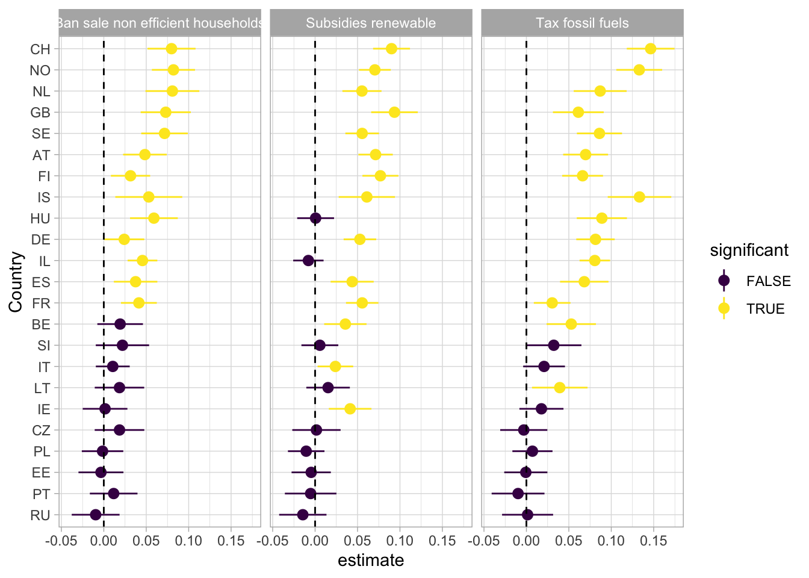
ess_models1 |>
unnest(glanced) |>
ggplot(aes(fct_reorder(cntry, adj.r.squared), adj.r.squared)) +
geom_col() +
coord_flip() +
facet_wrap(~ policy) +
theme_minimal()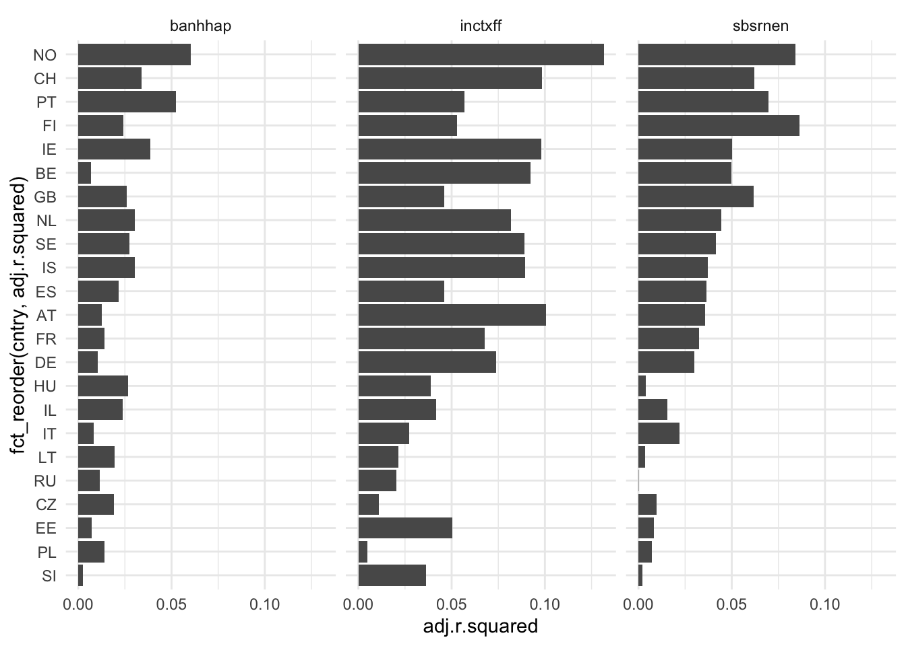
After fitting our model, it is crucial to conduct various diagnostics to assess the correctness of the specification and to ensure that we are not violating underlying assumptions made about the data in regression analysis. In this context, the performance package is employed to examine different aspects of these assumptions.
It is crucial to assess the correlation among predictors, as correlated predictors can capture similar phenomena, potentially leading to multicollinearity issues in regression analysis. To delve into this, the Variance Inflation Factor (VIF) serves as a key metric, quantifying the extent to which the variance of an estimated regression coefficient increases when predictors are correlated. Higher VIF values, typically considered problematic above 10, indicate more severe multicollinearity. Complementing VIF, the concept of tolerance, represented as 1/VIF, offers insight into the proportion of variance in a predictor not explained by other predictors. Tolerance values close to 1 signify low collinearity. If multicollinearity is identified, a practical approach for mitigation involves techniques like Principal Component Analysis (PCA). If it’s useful to check for collinearity, be aware that the extent to which this is an important issue is open to debate. For instance, see the takes of Paul Allison and Jan Vanhove.
One way in R to check for multicolinearity is from the check_collinearity() function from the performance package (equivalent to the car::vif function). The functions calculate the VIF, give confidence interval and calculte tolerance.
map(list(model1, model2, model3), ~ as.data.frame(check_collinearity(.x)))[[1]]
Term VIF VIF_CI_low VIF_CI_high SE_factor Tolerance
1 gender 1.008039 1.002405 1.026869 1.004011 0.9920253
2 eduyrs 1.119207 1.107951 1.131636 1.057926 0.8934900
3 hincfel 1.169034 1.156730 1.182303 1.081219 0.8554074
4 left_right 1.015336 1.008073 1.029131 1.007639 0.9848959
5 age 1.051724 1.042194 1.063408 1.025536 0.9508194
6 stfeco 1.124810 1.113433 1.137329 1.060571 0.8890387
Tolerance_CI_low Tolerance_CI_high
1 0.9738345 0.9976007
2 0.8836767 0.9025668
3 0.8458070 0.8645059
4 0.9716939 0.9919913
5 0.9403727 0.9595146
6 0.8792531 0.8981232
[[2]]
Term VIF VIF_CI_low VIF_CI_high SE_factor Tolerance
1 gender 1.008038 1.002386 1.027080 1.004011 0.9920262
2 eduyrs 1.120713 1.109355 1.133251 1.058637 0.8922892
3 hincfel 1.169344 1.156957 1.182708 1.081362 0.8551803
4 left_right 1.015457 1.008143 1.029339 1.007699 0.9847787
5 age 1.052173 1.042571 1.063941 1.025755 0.9504140
6 stfeco 1.124543 1.113101 1.137143 1.060445 0.8892499
Tolerance_CI_low Tolerance_CI_high
1 0.9736336 0.9976199
2 0.8824173 0.9014248
3 0.8455170 0.8643361
4 0.9714974 0.9919227
5 0.9399021 0.9591670
6 0.8793971 0.8983908
[[3]]
Term VIF VIF_CI_low VIF_CI_high SE_factor Tolerance
1 gender 1.008206 1.002506 1.026873 1.004095 0.9918609
2 eduyrs 1.118928 1.107645 1.131395 1.057794 0.8937123
3 left_right 1.015225 1.007963 1.029112 1.007584 0.9850030
4 hincfel 1.169866 1.157507 1.183194 1.081603 0.8547989
5 age 1.051062 1.041527 1.062788 1.025213 0.9514183
6 stfeco 1.124912 1.113498 1.137474 1.060619 0.8889585
Tolerance_CI_low Tolerance_CI_high
1 0.9738299 0.9975006
2 0.8838648 0.9028166
3 0.9717114 0.9921003
4 0.8451700 0.8639254
5 0.9409214 0.9601292
6 0.8791408 0.8980711Heteroskedasticity refers to the situation in regression analysis where the variability of the residuals (errors) is not constant across all levels of the independent variables. This violates one of the assumptions of classical linear regression, which assumes homoskedasticity, where the variance of the residuals is consistent.
The presence of heteroskedasticity can affect the reliability of statistical inferences. Standard errors of coefficient estimates may be biased, leading to incorrect p-values and confidence intervals. To check for heteroskedasticity, a common approach is to use diagnostic plots, such as plotting residuals against fitted values. Another method is statistical tests, such as the Breusch-Pagan test, which formally assesses whether the variance of the residuals is constant. If the test indicates significant heteroskedasticity, model adjustments or transformations may be necessary to address this violation of assumption. It is also possible to use robust standard errors, which are less sensitive to heteroskedasticity.
set.seed(123)
# Simulate data with heteroskedasticity (variance increases with x)
x <- seq(1, 100, length.out = 500)
y <- 2 * x + rnorm(500, mean = 0, sd = x) # Residual variance increases with x
# Fit a simple linear model (to generate fitted values)
model <- lm(y ~ x)
# Get fitted values and residuals
fitted_values <- fitted(model)
residuals <- residuals(model)
df <- tibble(fitted_values, residuals)
df |>
ggplot(aes(fitted_values, residuals)) +
geom_point() +
labs(title = "Residuals vs. Fitted Values : Heteroskedasticity")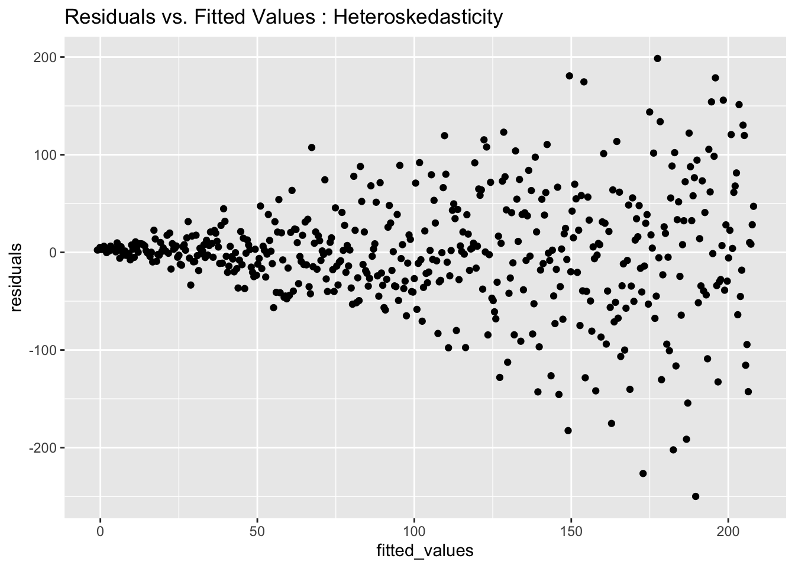
augment(model1) |>
ggplot(aes(.fitted, .resid)) +
geom_point()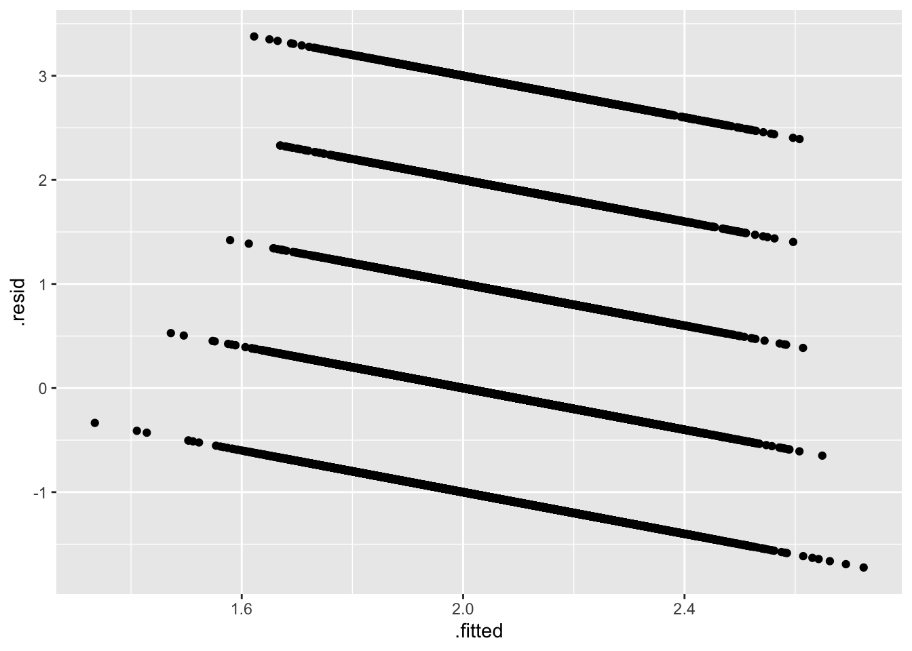
check_heteroscedasticity(model1) # Run a Breush-Pagan testWarning: Heteroscedasticity (non-constant error variance) detected (p < .001).To detect outliers, we use the cook distance which is an outlier detection methods. It estimate how much our regression coefficients change if we remove each observation.
check_outliers(model1)OK: No outliers detected.
- Based on the following method and threshold: cook (0.9).
- For variable: (Whole model)